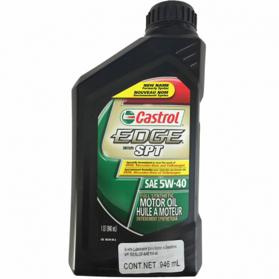

Aceite Castrol 1 LT
Caracteristicas
Castrol ofrece una amplia gama de aceites con tecnología avanzada para el motor de su auto, incluyendo aceites sintéticos, semisintéticos, para autos con alto kilometraje, minerales y de diesel. Con más de 100 años de experiencia y una reputación internacional de innovación y alto desempeño en sus aceites para motor, Castrol es reconocido como el proveedor a nivel mundial lider de soluciones en lubricación.
